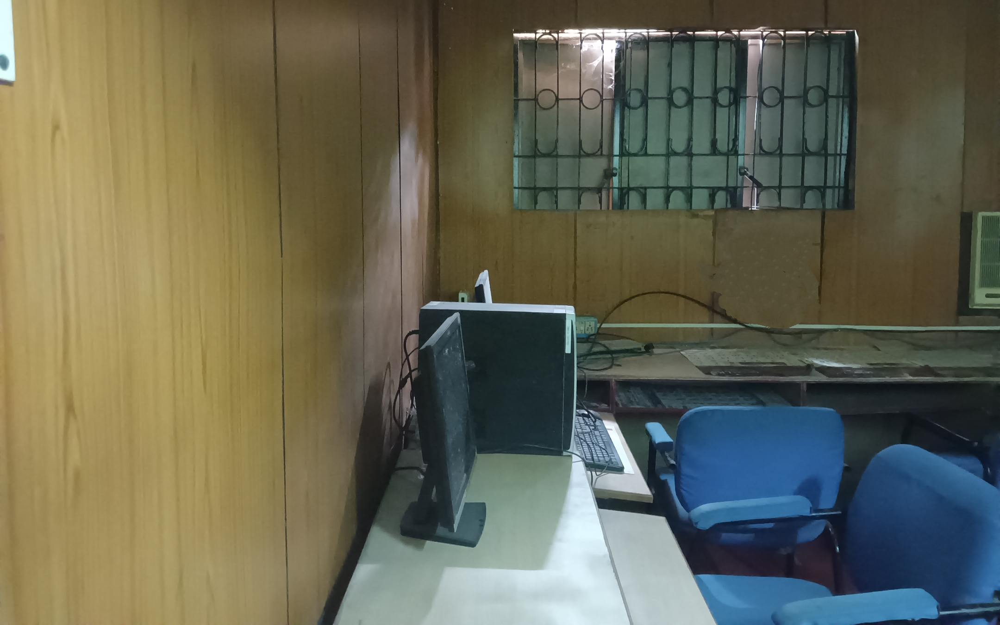
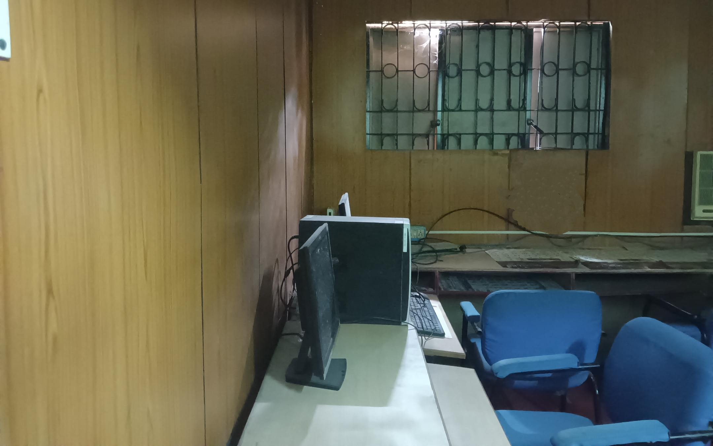
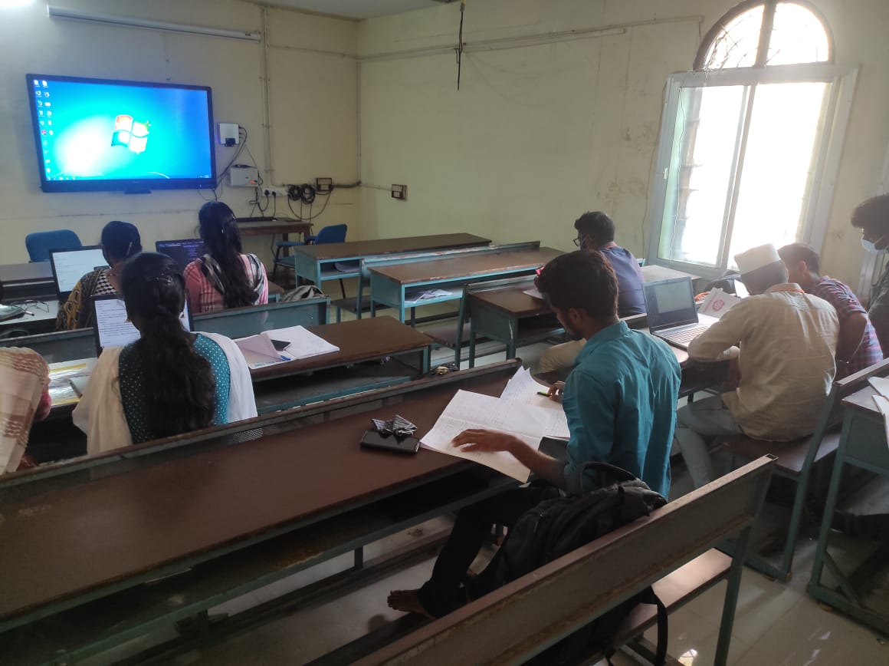

PG & RESEARCH DEPARTMENT OF COMPUTER SCIENCE(presidency college)

 college buildings are spacious, well planned with good architectural features.We also have fave facilities such as laborotaries, art , craft workshops,theatre and multimedia room...
college buildings are spacious, well planned with good architectural features.We also have fave facilities such as laborotaries, art , craft workshops,theatre and multimedia room...
 
backbone of our college infrastructure is the classroom and buildings.our college was looks pleasent with good painting and neat decorations

backbone of our college infrastructure is the classroom and buildings.our college was looks pleasent with good painting and neat decorations

Air conditioned smart rooms and neatly maintained seminar hall is available in our department.
 school buildings , classrooms , playgrounds , libraries are the most important aspect of school infrastructure.properly planned school infrastructure is an out-and-out key factor in effective teaching and learning.
school buildings , classrooms , playgrounds , libraries are the most important aspect of school infrastructure.properly planned school infrastructure is an out-and-out key factor in effective teaching and learning.
 The libraries at our college is well-stocked,equiped with interner based wifi facilities.We have more than 1lack books in our library.They are appealing queit zones for students to do their resource work,reflect on their work and indelge in reading.
The libraries at our college is well-stocked,equiped with interner based wifi facilities.We have more than 1lack books in our library.They are appealing queit zones for students to do their resource work,reflect on their work and indelge in reading.